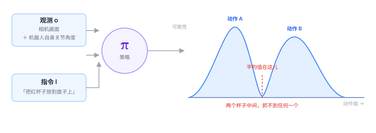

1.3 VLA 的一句话定义¶
前面两节都是「破」。这一节开始「立」。
VLA 的全部内容，可以压缩成一行式子：
就这个。剩下的所有章节，都是在解释这三个字母和这个竖线。

逐个拆开¶
\(\pi\)：策略¶
\(\pi\) 是希腊字母 pi，在强化学习里是策略（policy）的标准记号。
「策略」的意思是：在某个情况下，我打算怎么做。
注意它描述的是「打算」，不是「结果」。同一个局面，你可以选择稳妥的做法，也可以赌一把。策略描述的是这个选择的偏好，而不是某个具体的动作。
这就是为什么它的输出是一个概率分布，而不是一个值。
\(o\)：观测¶
\(o\) 是 observation，观测。这是最容易理解错的一项。
很多人以为 \(o\) 就是「相机拍的照片」。不对。真实的 \(o\) 通常包含两部分：
| 组成 | 内容 | 举例 |
|---|---|---|
| 外部感知 | 相机画面，可能是一路或多路 | 手腕相机 + 第三视角相机 |
| 本体感知（proprioception） | 机器人自己的状态 | 各关节角度、末端位姿、夹爪开合度、受力 |
第二项经常被忽略，但它至关重要。
类比
你闭着眼睛也能摸到自己的鼻子，因为你知道手现在在哪。
如果只看相机画面，机器人就像在看一张别人拍的视频——它知道自己「应该」在哪，但不知道「实际」在哪。 关节角度告诉它后者的真实值。
少了这一项，模型就学不会「我手已经伸过去了，不用再伸」。
\(l\)：语言指令¶
\(l\) 是 language。它可以短到两个词（「打开」），也可以长到一段话。
它不一定非得是自然语言。理论上可以用目标图像、用一段音频、用任意编码。但实践中几乎都用文本，原因在1.2 节讲过：文本能被大规模预训练，而且人类不需要学习就能用。
竖线 \(\mid\)：条件¶
这个竖线是整句话的关键，读作「给定」。
\(\pi(a \mid o, l)\) 的意思是：在「看到了 \(o\)」且「被要求做 \(l\)」的前提下，动作 \(a\) 的分布。
它和 \(\pi(a)\) 是两回事。后者是「不管什么情况，我一般都怎么做」——那是没有条件的行为习惯。加了竖线，才是「看着办」。
\(a\)：动作¶
\(a\) 是 action。它是全书最容易被轻轻带过、但实际最难的一项。第 2.3 节会专门讲，这里只说一句：
\(a\) 不是「往前走」，是一组数字。
典型形式是 7 维：
前三个是末端执行器在三个方向上的位移，中间三个是旋转，最后一个是夹爪的开合度。
为什么输出必须是「分布」¶
这是本节最重要的一点。
如果只是「输入图像和文字，输出动作」，那用回归模型直接拟合一个函数 \(a = f(o, l)\) 不就行了？为什么要绕一圈，输出一个概率分布？
因为同一个场景，合理的动作往往不止一个。
看那张图：桌上有两个杯子，你要「拿一个杯子」。从左边抓合理，从右边抓也合理。
如果你训练一个模型去拟合「平均答案」，它会输出两个杯子正中间——那个位置什么都没有。这个现象叫「模式平均」（mode averaging），是机器人学习里最经典的坑之一。
用概率分布来描述，就绕开了这个问题：模型输出两个峰，然后在执行时从分布里挑一个峰，而不是取平均。
这条线索会一直延续到第三部分
为什么后来的模型纷纷放弃「直接回归」、改用扩散模型或流匹配？ 根源就在这里——它们天生能表示多个峰。
从分布到动作：怎么挑¶
模型给出分布之后，还要有一个动作把它变成一个具体数字。常见三种做法：
1. 取最大值（argmax / 贪心）
选概率最高的那个动作。稳定、可复现，但如果两个峰一样高，它只会永远选其中一个。
2. 采样（sampling）
按概率随机抽一个。同一个场景跑两次，动作可能略有不同。这带来多样性，也带来不确定性——生产线上没人喜欢「偶尔换个抓法」。
3. 带温度的采样
用一个参数控制「保守还是随机」。温度趋近 0 就退化成 argmax，温度升高就更多样。
实践中最常见的是「训练时采样、部署时取最大值」，或者干脆让模型自己输出一个确定值（很多扩散模型的做法是固定噪声）。
这个定义藏了三个假设¶
\(\pi(a \mid o, l)\) 这个写法很干净，但干净是要付代价的。它悄悄假设了三件事，而这三件事在真实世界里都不完全成立。
假设一：当前观测就够了（马尔可夫性）¶
式子里只有「当前的 \(o\)」，没有「过去的 \(o\)」。这隐含地假设：当前这一刻的画面包含了做决定所需的全部信息。
显然不成立。
一个人从你面前走过，你只看到一帧静止的画面，无法判断他在往左走还是往右走。
这就是为什么实际的 VLA 输入很少是单帧，而是堆叠最近几帧（比如 2–4 帧），或者用一个带记忆的网络结构。\(\pi\) 的写法没变，但 \(o\) 悄悄变成了 \(o_{t-k:t}\)。
假设二：指令是明确无歧义的¶
「把杯子拿过来」——拿哪个？给谁？
真实的人类指令充满省略和指代，而模型必须把它映射成一个确定的动作。这个矛盾目前靠两件事缓解：一是让模型从画面里自己猜（通常猜最显眼的那个），二是让用户说得更具体。
在真实部署里，含糊指令导致的失败比技术故障多得多。
假设三：训练时「正确答案」是唯一的¶
训练时，模型看到的是「专家在这一帧做了什么」，然后学着去拟合。
但专家做的动作只是一个合理动作。如果同一个局面有一百种正确做法，训练数据里只会出现其中一种，模型就会误以为「只有这一种是对的」。
这个问题的后果，就是第 4.2 节要讲的「分布漂移」。
它在代码里长什么样¶
只为了让你看到形状，不需要运行：
# 概念示意，不是真实实现
def policy(obs, lang):
x = vision_encoder(obs["image"]) # 图像 → 视觉 token
y = proprio_encoder(obs["qpos"]) # 关节角 → 本体 token
z = lang_encoder(lang) # 文本 → 语言 token
h = transformer(torch.cat([x, y, z])) # 拼成一个序列，过主干
dist = action_head(h) # 特征 → 动作分布
return dist # 注意：返回的是分布，不是动作
dist = policy(obs, "把红杯子放到盘子上")
action = dist.sample() # 或者 dist.mode()，取峰值
robot.step(action) # 执行，然后等着看下一帧
读这段代码时注意两件事：
- 三个模态最后被拼成了一个序列——这就是 Transformer 统一架构的样子；
- 函数返回的是分布，取动作是外面单独一步。这个分离在很多开源代码里是显式的（
predict_action返回 logits 或噪声，select_action再处理）。
一句话说完¶
VLA 就是一个函数：给它「现在看到什么」和「要它干什么」，它告诉你「每个动作有多大概率是对的」。
后面所有的复杂度——视觉怎么编码、语言怎么对齐、分布怎么表示、误差怎么累积——都是在这个骨架上长出来的肉。
自测三问
- \(\pi(a \mid o, l)\) 里的 \(o\) 为什么不只是相机画面？少了本体感知会怎样？
- 如果模型直接回归一个动作值，会遇到什么问题？为什么输出分布能绕开它？
- 这个定义隐含的三个假设分别是什么？各自在什么情况下会失效？
VLA 是一个条件策略函数 π(a|o,l)：给定观测和指令，输出动作的概率分布。 输出分布而不是单个值，是为了容纳「同一场景有多种合理动作」这个事实。